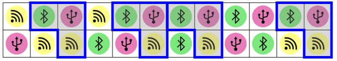
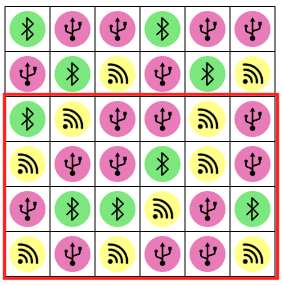
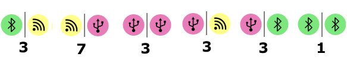
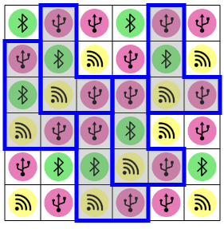
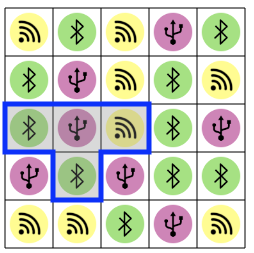
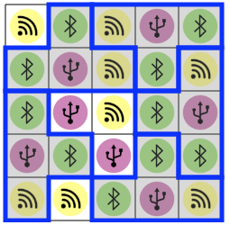

Solution
On pouvait utiliser la combinaison de deux approches différentes pour résoudre ce problème :
- Essayer un par un des emplacements pour la première forme, puis parcourir la grille pour chercher d'autres emplacements contenant le même motif.
- Analyser certaines propriétés sur le contenu de la grille, pour n'essayer que les motifs qui ont une chance d'apparaître le nombre de fois demandé.
La première approche, rapide dans cette version du sujet, consiste à essayer à placer la forme sur les premières positions en partant de la gauche, et de voir sur quelle position on fait apparaître un motif qui se répète 3 autres fois.
La deuxième approche consiste à remarquer que seul le symbole jaune apparaît au moins 4 fois sur la ligne du bas. Il faut donc l'inclure dans le contenu du motif. Parmi les motifs jaunes de la ligne du bas, 2 sont surmontés d'un symbole vert, et 4 sont surmontés d'un symbole violet. Il faut donc forcément placer les formes bleues sur les symboles jaunes surmontés d'un symbole violet.
Suivons la seconde approche. Les deux cases du bas de chaque forme vont forcément couvrir des cases de la zone marquée en rouge ci-dessous.
Dans cette zone, seule la paire "symbole jaune suivi d'un symbole violet" apparaît plus que 5 fois. On n'est pas obligé de compter dans les détails pour s'en rendre compte, mais à titre d'information voici le nombre de fois que chaque paire de symboles apparaît dans la zone rouge.
Une fois que l'on a déterminé que les symboles des deux cases du bas de la forme bleue sont jaune et violet, on peut assez facilement placer les formes dans la grille, en commençant par les formes du haut et en évitant les recouvrements.
Suivons la seconde approche. La forme bleue doit contenir 4 symboles parmi les 3 symboles : jaune, vert et violet. Donc forcément un des symboles doit apparaître deux fois dans chaque forme bleue. Ce symbole ne peut être que le symbole vert, car c'est le seul à apparaître 10 fois (il y a 10 verts, 7 violets, et 8 jaunes).
On peut ensuite se demander quel symbole va apparaître dans la case du milieu de la forme bleue.
- Le symbole du milieu de la forme bleue ne peut pas être le jaune car, si on enlève les symboles des coins (qui ne peuvent pas être utilisés pour un milieu), il ne reste que 5 symboles jaunes, et parmi ces 5 symboles il y en a 3 qui sont trop proches les uns des autres pour pouvoir être au milieu de 3 formes bleues distinctes. On n'arrivera donc pas à placer 5 fois le symbole jaune au milieu d'une forme bleue.
- Le symbole du milieu de la forme bleue ne peut pas être le vert, car sinon la forme bleue contiendrait forcément deux symboles verts l'un à côté de l'autre (vu qu'il y aurait deux symboles verts dans chaque forme, dont un au milieu). Or, dans la grille de symboles, il n'y a que 3 paires de symboles verts côte à côte, et il faudrait 5 paires.
En résumé, chaque forme bleue doit avoir un symbole violet en position centrale, et être constitué d'un symbole jaune et de deux verts.
Si l'on n'a pas de chance, on peut commencer par placer une forme, et être tout de suite coincé car il n'y a aucun autre endroit pour en placer une autre au contenu identique.
Si l'on a toujours pas de chance, on peut placer une forme (celle en bas à gauche) qui occupe la place de deux autres, et on n'arrive qu'à placer 5 formes.

En cherchant à bien ranger les 5 formes, on obtient la solution.
C'est de l'informatique !
En informatique comme dans ce petit jeu, il est très utile d'exploiter des contraintes, c'est-à-dire des propriétés qui doivent nécessairement être respectées, afin de réduire significativement l'espace des possibilités à tester avant d'atteindre une solution.